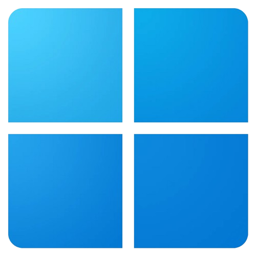

python
Lógica de back-end, automação de tarefas e manipulação de dados.
Prazer em te conhecer me chamo Eduan, sou desenvolvedor brasileiro com foco em desenvolvimento web back-end. Gosto de entender o problema antes de escrever a primeira linha de código e de manter as coisas simples sempre que possível.
No dia a dia trabalho com Python e JavaScript para construir lógica e regras de negócio, e uso HTML e CSS para apoiar o front-end quando o projeto pede. Todo o versionamento e organização do trabalho passa por Git e GitHub.
Lógica de back-end, automação de tarefas e manipulação de dados.
Comportamento dinâmico, integração com APIs e scripts no servidor.
Estrutura semântica de páginas e templates renderizados no back-end.
Estilização de interfaces simples para apoiar projetos back-end.
Editor principal para todo o desenvolvimento do dia a dia.
Controle de versão e organização do histórico dos projetos.
Hospedagem de repositórios, colaboração e publicação de projetos.

Sistema principal para desenvolvimento, uso cotidiano e testes de aplicações.
Ambiente de servidores, automações e execução de projetos back-end em produção.